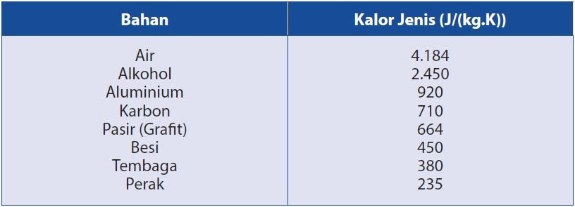
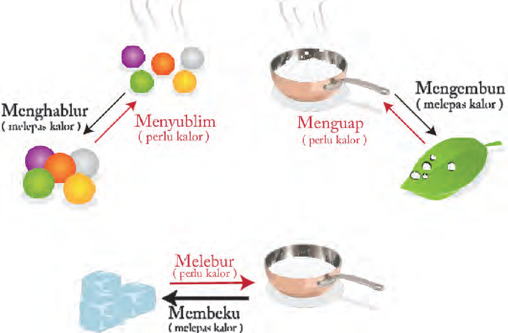
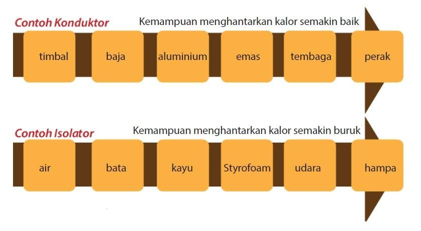

Bab 5 Kalor dan Perpindahannya
Pengertian Kalor
Kalor adalah energi panas yang berpindah dari benda bersuhu lebih tinggi ke benda bersuhu lebih rendah. Satuan kalor dalam SI adalah Joule (J), namun yang sering digunakan dalam bidang gizi yaitu kalori atau kilo kalori. Satu kalori adalah jumlah energi panas yang digunakan untuk menaikkan suhu 1°C pada 1 gram air.
Kalor dan Perubahan Suhu Benda
Zat gizi makanan mengandung energi kimia yang dapat diubah menjadi energi panas atau energi lain. Energi panas yang disediakan oleh makanan diukur dalam kilo kalori (kkal). Satu kkal = 1000 kalori, 1 kalori = 4,2 J.
Suhu benda akan naik jika benda tersebut diberi kalor, sebaliknya suhu benda akan turun jika melepaskan kalor ke lingkungan. Contohnya, air panas didalam gelas lama – kelamaan akan mendingin. Hal ini karena kalor dilepaskan ke lingkungan oleh air. Kalor yang diperlukan untuk menaikkan suhu benda tergantung dari jenis benda tersebut. Semakin besar kenaikan suhu benda, semakin besar pula kalor yang diperlukan. Semakin besar massa jenis benda, semakin besar pula kalor yang diperlukan.
Setiap benda memiliki kalor jenis yang berbeda. Berikut kalor jenis benda
Kalor pada Perubahan Wujud Benda
Untuk mendidihkan air diperlukan kalor, jadi untuk mengubah zat cair (air) menjadi gas (uap) diperlukan kalor. Berikut ini perubahan wujud zat yang memerlukan kalor.
Contoh penerapan kalor yaitu ketika kita beraktivitas, maka tubuh kita akan menjadi panas dan kemudian berkeringat. Ketika keringat menguap, maka memerlukan kalor. Kalor ini diambil dari tubuh, sehingga tubuh menjadi dingin dan kembali ke suhu optimal.
Perpindahan Kalor
Kalor dapat berpindah melalui 3 cara yaitu konduksi, konveksi dan radiasi.
-
Konduksi adalah perpindahan kalor melalui bahan tanpa disertai partikel – partikel bahan tersebut. Contohnya ketika menyetrika baju, maka baju akan menjadi panas tetapi licin dan rapi. Hal ini karena kalor berpindah dari setrika ke baju.
Bahan yang dapat menghantarkan listrik dengan baik disebut konduktor, contohnya : logam. Bahan yang dapat menghantarkan listrik dengan buruk disebut isolator, contohnya Plastik dan kayu. Setiap bahan memiliki kemampuan menghantarkan panas secara konduksi (konduktivitas) yang berbeda. Berikut ini sifat – sifat konduktivitas bahan :
 -
Konveksi adalah perpindahan kalor melalui suatu bahan disertai partikel – partikel bahan tersebut. Contohnya terjadinya angin darat dan angin laut di pantai.
-
Radiasi adalah perpindahan kalor tanpa memerlukan medium. Contohnya ketika kita berada di dekat api ungun, maka tangan akan ikutan panas. Hal ini karena kalor dari api unggun berpindah ke tangan kita. Setiap benda dapat memancarkan dan menyerap radiasi kalor, yang besarnya bergantung pada suhu dan warna benda.